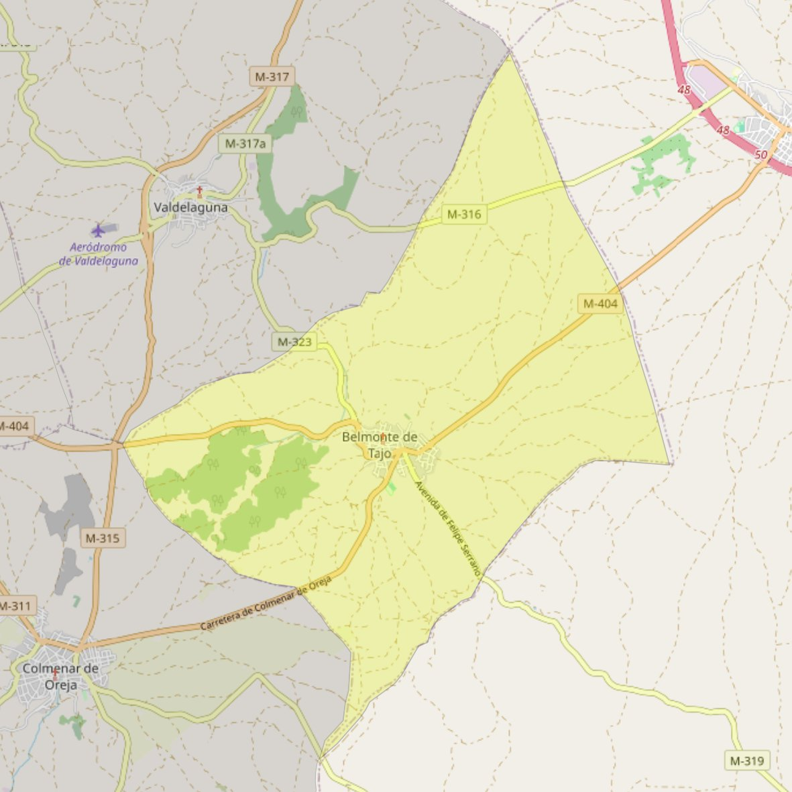

Nuestra Señora de la Estrella

- Arciprestazgo
- Chinchón
- Población
- Belmonte de Tajo
- Dirección postal
- c/ Espíritu Santo, s/n
- Código postal
- 28390
- Extensión
- 24,04 km² (2.404 ha)
- Teléfono
- 918 747 577
- Correo electrónico
- nsestrella-belmonte@diocesisgetafe.es